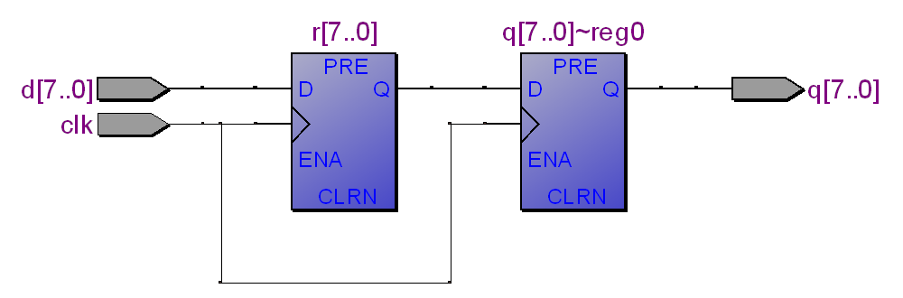
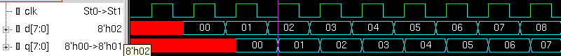

Understanding Digital Logic Design
Joint seminar by Almaty Management University and Imagination Technologies
August 23 2016
Quiz 2.2 - Combinational and Sequential
Name ___________________________________________________________________
Understanding blocking and non-blocking assignments in SystemVerilog,
combinational and sequential always-blocks, their simulation and synthesis.
For each design under test (dut1-dut16) show the corresponding schematics
and the corresponding waveform:
module dut1 module dut2
( (
input clk, input clk,
input [7:0] d, input [7:0] d,
output logic [7:0] q output logic [7:0] q
); );
always @(posedge clk) always_ff @(posedge clk)
q <= d; q <= d;
endmodule endmodule
module dut3 module dut4
( (
input clk, input clk,
input [7:0] d, input [7:0] d,
output logic [7:0] q output logic [7:0] q
); );
logic [7:0] r; logic [7:0] r;
always @(posedge clk) always @(posedge clk)
begin begin
r <= d; q <= r;
q <= r; r <= d;
end end
endmodule endmodule
module dut5 module dut6
( (
input clk, input clk,
input [7:0] d, input [7:0] d,
output logic [7:0] q output logic [7:0] q
); );
always @* always_comb
q = d; q = d;
endmodule endmodule
module dut7 module dut8
( (
input clk, input clk,
input [7:0] d, input [7:0] d,
output logic [7:0] q output logic [7:0] q
); );
logic [7:0] r; logic [7:0] r;
always @(posedge clk) always @(posedge clk)
r <= d; q <= r;
always @(posedge clk) always @(posedge clk)
q <= r; r <= d;
endmodule endmodule
module dut9 module dut10
( (
input clk, input clk,
input [7:0] d, input [7:0] d,
output logic [7:0] q output logic [7:0] q
); );
logic [7:0] r; logic [7:0] r;
always @* always @(posedge clk)
r = d; q <= r;
always @(posedge clk) always @*
q <= r; r = d;
endmodule endmodule
module dut11 module dut12
( (
input clk, input clk,
input [7:0] d, input [7:0] d,
output logic [7:0] q output logic [7:0] q
); );
logic [7:0] r;
assign r = d; wire [7:0] r = d;
always @(posedge clk) always @(posedge clk)
q <= r; q <= r;
endmodule endmodule
module dut13 module dut14
( (
input clk, input clk,
input [7:0] d, input [7:0] d,
output logic [7:0] q output logic [7:0] q
); );
logic [7:0] r; logic [7:0] r;
assign r = d; assign q = r;
assign q = r; assign r = d;
endmodule endmodule
module dut15_not_a_good_style module dut16_bad_style
( (
input clk, input clk,
input [7:0] d, input [7:0] d,
output logic [7:0] q output logic [7:0] q
); );
logic [7:0] r; logic [7:0] r;
always @(posedge clk) always @(posedge clk)
begin begin
r = d; q <= r;
q <= r; r = d;
end end
endmodule endmodule
The common testbench used to generate the waveforms
module testbench;
logic clk;
logic [7:0] d, q;
dut dut (clk, d, q);
initial
begin
clk = 0;
forever
#10 clk = ! clk;
end
initial
begin
$dumpvars ();
for (int i = 0; i < 10; i++)
begin
@(posedge clk);
#15;
d = i;
end
$finish;
end
endmodule
A)

B)

C)

X)

Y)

Z)

17. What kind of delay is illustrated on the picture below (marked by "?")?
a) Propagation delay: tpd = max delay from input to output
b) Contamination delay: tcd = min delay from input to output
c) Skew: difference between two clock edges. The clock doesn’t arrive at all registers at same time.
18. What kind of timing constraint is illustrated on the picture below (marked by "?")?
a) Setup time: tsetup = time before clock edge data must be stable (i.e. not changing)
b) Hold time: thold = time after clock edge data must be stable
c) Aperture time: ta = time around clock edge data must be stable (ta = tsetup + thold)
d) Tc = minimum and maximum delays between registers
19. Which rule for signal assignment is violated in the following code?
a) Synchronous sequential logic: use always @(posedge clk) or always_ff @(posedge clk)
and nonblocking assignments (<=)
always_ff @ (posedge clk)
q <= d; // nonblocking
b) Simple combinational logic: use continuous assignments (assign…)
assign y = a & b;
c) More complicated combinational logic: use always @* or always_comb and blocking assignments (=)
d) Assign a signal in only one always statement or continuous assignment statement
e) This code does not violate any rules for signal assignment
module dut
(
input clk,
input [7:0] d,
output logic [7:0] q
);
logic [7:0] r;
always @(posedge clk)
r = d;
always @(posedge clk)
q = r;
endmodule
Quiz is created by Yuri Panchul